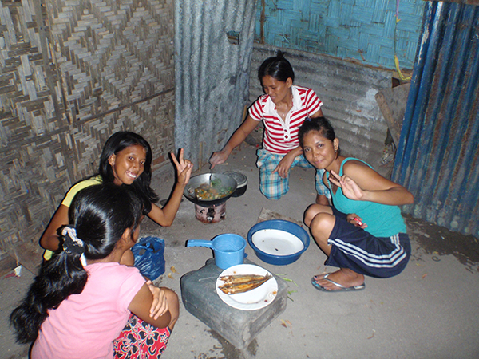
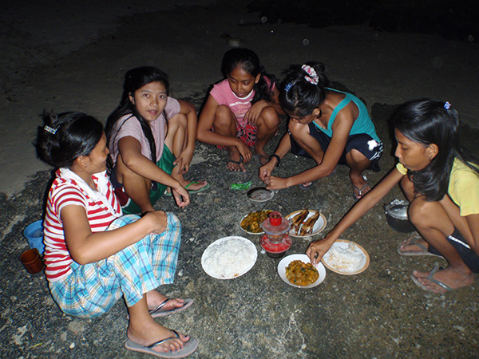

島民の暮らし１～島民と一緒に夕食作り～

まずは、サリサリストアと呼ばれる、村の中にある小さな雑貨店で食材を調達する。
ここでは、野菜や果物、小分けの調味料、駄菓子、石鹸やシャンプーなどが売られていて、生活に必要なものは、とりあえず一通り揃う。
さっそく今日の夕食に必要な野菜を調達しよう。里芋１個・５ペソ、かぼちゃ１切れ・５ペソ、魚の干物１匹・12ペソ、を購入。合計で日本円にして５０円くらいだ。
島民の家に戻り、洗濯用のたらいをひっくり返した、簡易まな板で野菜を切る。
こっちの人は先を読まないので、全部野菜を切り終えてから、ボールに入った量を見て、「少なかったね」と、またお店に買いに行く。効率の良さなんか全く気にしない。
七輪のようなものに木炭を入れて、火をつける。１つしかないので、一品一品を順番に作らなくてはいけない。最初にお米をといで、鍋でご飯を炊きあげる。だいたい火にかけてから２０分くらいで炊ける。
次は野菜炒め。かぼちゃ、瓜、里芋を煮る。柔らかくなったら、塩と現地の調味料で味をととのえる。島民は、味付けが実に上手い。
最後に干物を網の無い七輪で炙る。直火焼きだ。島で売られている干物はかなりしょっぱいので、味付けの必要はない。
やっと、ご飯とおかず２品が完成した。夕方から始めたのに辺りは真っ暗。結局２時間くらい調理にかかった。
完成したおかずを大皿に盛り付ける。今日はすごく豪華な食事らしい。そして、夕飯をどこに持ってくのかと思ったら・・・なんと海岸の岩場の上へ。現地では地べたでご飯を食べる場合、お尻を浮かせてしゃがみこむ座りかたをする。これは慣れていないと足が疲れる。
海で手を洗い、夕食を囲んで、準備OK！さぁ食べよう！
あっ、でもスプーンがないけど・・・？
みんなはいつも通り手で食べてる。よし、ここはフィリピン、フィリピンスタイルでやってみよう！片手でご飯を軽く握ってお団子にして食べる。でも、フィリピン米は日本米と比べて細くてパサパサしている。うまく口に入らず、ボロボロとこぼす・・・。そして取り皿はなく、大皿から直接食べるのだ。
そんなことは気にしない！そしてとっても楽しい！！
フィリピン人はお米をたくさん食べるので、一回の食事で鍋が空っぽになってしまう。ちなみに、だいたい５合くらいを男性３人でたいらげてしまうようだ。
そして、フィリピンでは食事の最中に飲み物を飲まないことが多い。そのかわり、食事が終わるとソフトドリンクを飲むのが習慣のようだ。粉末のオレンジジュースを水で溶かし氷も入れてくれる。これがすごく美味しい。粉末ジュースなんて駄菓子屋さん以来だなぁ。
そして後片付けは、海でお皿洗い。砂を使って汚れを落とすとあっという間にきれいになった。確かに油は使っていないから片付けも楽だ。後で真水でさっと洗いながして、おしまい。
お腹いっぱいになった後は、海を眺め、星を数えて、しばしのんびり。
今日も楽しい一日だった。